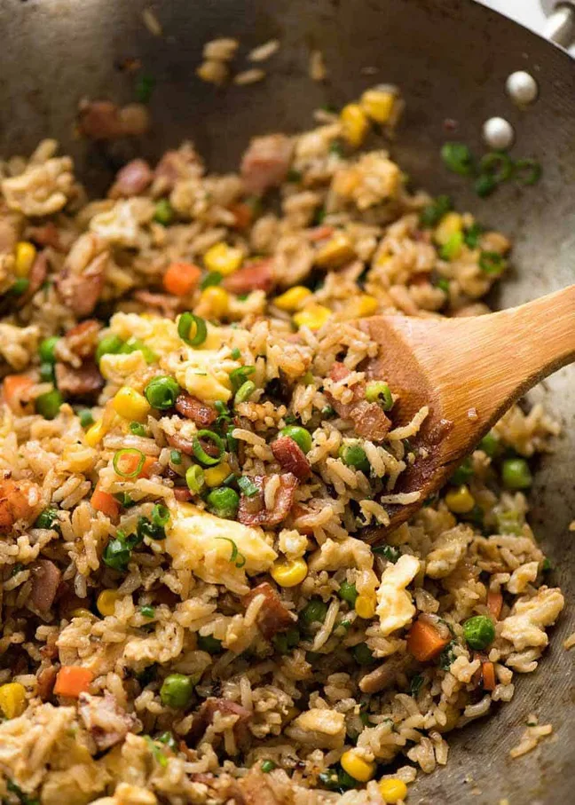

Get the sauce right and you can make a fried rice that really stacks up to your favourite Chinese restaurant in 10 minutes! This fried rice recipe is super quick, made with egg, veggies and a handful of bacon. But it’s totally customisable – make it your own!
This is a quick, 15 minute fried rice recipe that’s highly versatile. Terrific as it is, but totally adaptable to add what you want. I’ve used egg and a basic mix of frozen chopped vegetables – because I totally buy into the whole “snap frozen” thing and this is intended to be super quick ‘n easy. Just carrots, peas and corn (still frozen, don’t even need to thaw).